知晓无穷的人
小插曲
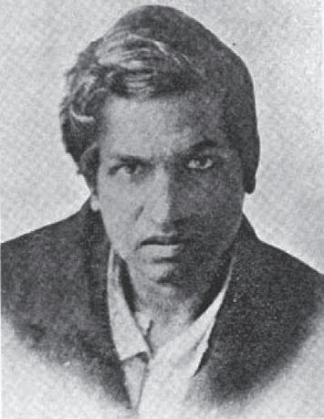
印度之旅：当哈代遇到拉马努金
斯里尼瓦瑟·拉马努金是个数学天才。他1887年生于印度马德拉斯的埃罗德，年纪轻轻就绽放出非凡的数学才华。
然而在他的有生之年，没有人能指导他学习，也没有人能告知他学什么，可以说拉马努金是自学成才。他没经过任何正规训练，就在好几个数学领域取得了前所未有的成就。
他的主要工作集中在数论上。同毕达哥拉斯一样，拉马努金与数字十分亲近。
1913年，拉马努金把他的一些数学成果（等式）寄给了3位有名的英国数学家，但只有高德菲·哈罗德·哈代一人慧眼识得结果背后有高人在。尽管这些结果粗粝如璞，但是中有美玉。第一次世界大战期间，哈代设法把拉马努金带到伦敦，进入剑桥大学。拉马努金遂成为剑桥大学三一学院的首位印度院士。
以下是两个迷倒了哈代的结果（等式）。我在数学系大三那年初见这些等式，立感音乐之美。它们在我心中就是优美的交响乐。这些等式看起来很复杂，实际就是很复杂。你无须理解，甚至无须从数学的角度来看，只须欣赏其中蕴含的数字韵律灿烂之美。
拉马努金第一交响乐
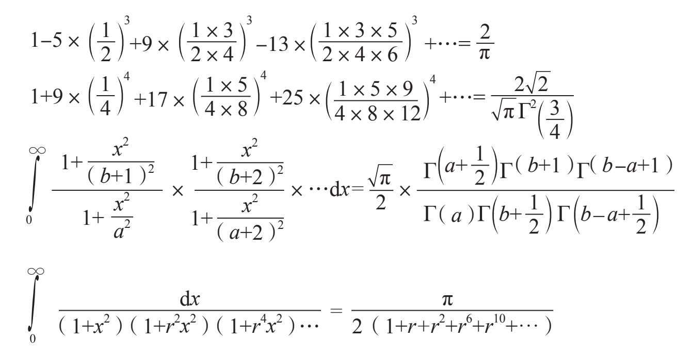
精美绝伦！
对我而言等式并非他物，只是传达了神意。
——拉马努金
当拉马努金的数学等式惊艳入目时，或许我们学究气上涌，想检验一下它们是否正确。
我们先看看第一个等式。
这里我们看到一个无穷级数，之后交叉着加一项减一项。第一项是1，然后每一项是一个整数和一个分数的乘积。整数部分每项比前一项增加4，分数部分以奇数序列的乘积为分子，偶数序列的乘积为分母，序列的长度每项比前一项都加1。拉马努金断言级数不断延展，结果就接近2除以π（圆周与直径之比）！此级数延展到无穷项，结果恰恰就是2除以π。
这个等式是怎么来的？这种等式拉马努金可有几千个呢（更精确地说，差不多是3900个）。你或许难以置信，但上面这些等式都是他最简单的作品。
诚实地讲，我必须透露拉马努金的某些等式并非百分之百正确。但是，我坚信伟人的错误比凡人的谨慎更有教益。
哈代与拉马努金
哈代与拉马努金在性格上截然不同。哈代是个无神论者（他视上帝为最大的敌人），在数学上非常严谨死板——他要看每个等式的证明。而拉马努金笃信宗教，在数学上更依赖直觉。他不仅在等式中看到了神的旨意，对灵感的出现也感到很困惑，唯恐自己被别人当作疯子。由此我想到了米洛斯·福尔曼的电影《莫扎特传》里萨列里读到莫扎特的《大组曲》的乐谱，坚信是上帝借莫扎特之手写下的音符。萨列里喋喋不休地抱怨上帝怎么没让他写成这样的巨著。我猜有些人认为人类的才华都是来自上帝。
我想拉马努金最奇怪的等式就是下面这个式子：
1+2+3+4+…=-1/12
当真？？看起来错得离谱啊！左边无穷项的和一定是无穷，而且无论如何也不可能是负数！但是别误会，拉马努金确实知道他的所作所为也确有其理：他在研究非同凡响的黎曼-欧拉zeta函数（这是复变函数，超出本书范围）。拉马努金给哈代的信中写道：“在我的理论中，形如1+2+3+4+…的序列之和等于-1/12。我跟您说这个就是为了请您立刻指出其中的谬误所在。”
尽管哈代在数学上非常严格（在其他方面他还是很温柔热心的），但也无能为力，反而被这位印度天才的迷人等式深深吸引。
拉马努金的式子一定是对的，因为若非如此，没人能够妙手偶得。
——G.H.哈代
哈代把拉马努金的作品拿给他日常合作的同事约翰·李特尔伍德看（我们在前文的网球悖论里提到过他）。李特尔伍德也震惊于拉马努金的才华。他声称，他不知道哪个数学家还能与拉马努金比肩——拉马努金碾压众人。
哈代和李特尔伍德数年来的工作领导了英国数学研究的前沿，若论其影响力，我引用一位杰出同事的戏言：“现今英国只有3位伟大的数学家——哈代、李特尔伍德和哈代-李特尔伍德。”
——哈那德·玻尔[1]
哈代是一位成就卓著的数学家。但是保罗·厄多斯（我们之间也提到过他）问哈代他对数学的最大贡献时，哈代回答：“发现了拉马努金。”
我再补充一点：哈代喜欢给数学家从0到100量化评级。他给自己25级，给同事李特尔伍德30级，给伟大的德国数学家大卫·希尔伯特（数学里的“希尔伯特空间”这一支就是以他命名的）85级。对拉马努金，他给了最高级100！
关于哈代与数学思想的漫谈
我最爱的一本书就是哈代的《一个数学家的自白》。书里讨论了数学的美学，在严谨有条理的思考模式中偶尔允许灵光一现。哈代热爱纯（理论）数学，甚至曾声称他从未为了达到实际的目的用数学做任何事。但是，他大错特错了。例如，研究过群体遗传学的人都很熟悉哈代-温伯格定律。哈代也曾认为他挚爱的数论毫无实际用处。如今，数论与编码和解码密切相关。哈代甚至认为相对论没有实际用途。预测什么数学发现可以用于实践，而什么“仅仅”用于锻炼思维，这件事非常难——甚至或许根本不可能。
哈代在他的书里用非常迷人的方式解释了他认为的数学里的美丑，我们稍后再议。
拉马努金奖
拉马努金虽然精于数学却不擅养生。1920年，32岁的他英年早逝，彼时他刚返回印度不久。
2005年开始，以他名字命名的SASTRA拉马努金奖用于奖励基于他的工作取得成果的人。此奖每年颁发给32岁及以下的数学家——32是拉马努金结束传奇一生的年龄，也是他深爱的数字。
2009年，德国数学家卡特林·布林格曼获得此奖。最近一届是2017年，乌克兰数学家玛丽娜·维亚佐夫斯卡获奖，成果是她在8维和24维上解决了问题！
我们回到上一讲讨论过的有趣的数字的话题。
出租车牌1729
有一天，哈代去拉马努金那儿探病。哈代提到他过来时乘的出租车车牌号是1729，“这数好枯燥啊。”哈代戏谑道。“才不是呢！”拉马努金激动地反驳：“1729最有趣了！你没注意到吗：它是最小的能以两种方式写成立方和的数。第一种是1的立方加12的立方，第二种是10的立方加9的立方。”我把它写给你看：
1729=123+13=103+93
我给朋友们复述这个故事时，他们都惊讶于拉马努金计算敏捷，能把1729写成两种立方和的形式。坦白地说，我更惊讶于拉马努金知道1729是有这个属性的数里最小的。他是怎么知道的？我全无头绪！
（当然，我们这里的讨论只限于正数。如果我们可以用负数，就能找到比1729更小的数，比如91=63+（–5）3=43+33。）
每个正整数都是拉马努金的私人朋友。
——约翰·李特尔伍德
我想指出1729还有其他有趣的属性。我最喜欢的一条来自日本数学家和作家藤原正彦（生于1943年）[2]，他指出只有3个数符合以下性质（而1729是其中之一）：它的数码之和与其翻转过来的数的乘积等于原来的数。
1+7+2+9=19
19×91=1729
动动脑筋
请找出另外两个具有这个属性的数。（1也有这个属性，但是太平凡了，不算。）提示：其中之一是两位数，不难找。第二个数是四位数[3]。
卡普雷卡发现了6174的秘密
印度数学家达他特里亚·拉姆钱德拉·卡普雷卡生于1905年。他毕业于孟买大学并投身教育事业。他教了几十年的书，但从未学过高等数学。他在幻方等问题上有许多贡献。他发现了关于数字的一些重要属性，有生之年却未被认可。只有近些年对数论的贡献才使他获得欣赏——这份迟来的荣誉就是以他的名字命名一个常数。
卡普雷卡常数
1949年，卡普雷卡发现了按照以下方法操作，序列的极限是6174：对任意一个四位数（数码不能全同）把数码重新排列得到一个最小的数和最大的数，用大的减去小的。如果结果是6174，就成功了；如果不是，就重复这个过程，结果总会是6174。
我们就用写本书时的年份来试试吧：2009。用这些数码能构成的最大的数是9200，最小的是0029。9200减去29就是9171。
我们重复这个过程：9711-1179=8532。
我们继续：8532-2358=6174。我们达成目标啦：结果是6174。
用数学语言来说，6174是“不动点”，也就是说如果把它代入这个过程，就会回到6174。我们检验一下：7641-1467=6174。喏，没别的地方可去了，旅程到终点了。
如果我们搞点花样呢？对于有3个相同数码的数字怎么样？比如说1112？我们试试看。
2111-1112=999
（因为我们需要处理的是四位数，所以把结果写成0999。）
9990-0999=8991
9981-1899=8082
8820-0288=8532
8532-2358=6174
我们成功了。
如果有好奇的读者，可以试试其他数。
现在，我们有一个好机会来创建自己的精彩数学实验。如果不是四位数，而是三位数，会怎样呢？例如，我们用169试试看。
961-169=792（另外，169=132并且961=312。我离题了哦。）
972-279=693
963-369=594
954-459=495
我们到了一个不动点（检查一下！）。莫非我们发现了三位数的卡普雷卡常数？的确如此！如果你是狂热的代数爱好者，不费多少气力就能证明。
我们再看看两位数。这很简单，不是吗？
从我的最爱17开始吧。71-17=54，54-45=9，90-9=81，81-18=63，63-36=27，72-27=45，54-45=9，嘿！我们来过这儿啊！怎么回事？事实上，我们来到一个周期点。两位数里没有不动点。
动动脑筋
五位数怎么样？六位数又如何？
卡普雷卡数
卡普雷卡发现了有些数有不同寻常的属性：如果对它做平方，结果可以分成两个数，其和还是原来的数。举一些例子可以看得更清楚：
92=81 1+8=9
452=2025 20+25=45
9992=998001 998+001=999
27282=7441984 744+1984=2728
8181812=669420148761 669420+148761=818181
9，45，999，818181，…是卡普雷卡数组合。你可以在自己的计算机上运行一个简单的程序来获取更多这类数。
动动脑筋
证明9，99，999和9999，…是卡普雷卡数。
一个古印度谜题
寻找此序列的下一个数：1，2，4，8，16，23，28，38，49，…
花几分钟思考一下吧。如果你想不出来，答案在本书末尾[4]。
这个谜题的有趣之处在于：通常来说，伟大的数学家解题时绞尽脑汁是因为思路千回百转，而聪明的小孩子往往直击要害。
卡普雷卡观察到有些数可以用一个小点的数加上它的数码之和来构成，有些数则不能。例如，我们对40可以用29处理一下得到（2+9=11，29+11=40）。但是对20无论如何也不行（检验一下吧）。
卡普雷卡建立了一个公式，判断一个数是否不能以上述方法构造。我就不夺去你重建这个公式的乐子了。提示一下，找到满足的第一个数，然后看看按规则后续是怎样的。
现在，我们把目光拉回到伟大的主角——毕达哥拉斯身上吧。
沙滩上的毕达哥拉斯
想象一下，你的课堂不是在学校里而是在沙滩上，这很棒吧？毕达哥拉斯正是这么做的。毕达哥拉斯喜欢在沙滩上摆弄石头（代表数字）。
他用各种方式排列石头，由此建立了许多数学公式和概念。
我们来看几个例子。
连续奇数之和
回想起在学校学习的内容，人们准能想到这个规律：从1开始前n个连续奇数的和，等于n的平方。
请看：
1+3=4=22
1+3+5=9=32
1+3+5+7=16=42
如此这般。
在中学里学过比较高等的数学的人可能知道，这个规律可以用所谓的“数学归纳法”来证明。数学归纳法是证明中一个非常迷人的工具，值得称道的是，它可以通过证明有限个元素来推导到无穷个元素时也成立。我要来说明一下归纳法是怎么回事。假设我们想对所有自然数证明下式：
1+3+…+（2n-3）+（2n-1）=n2
证明分为两部分。首先，我们做所谓归纳步骤的证明，意思是我们证明在一些前提下它是正确的：如果等式对n成立，那么对n+1也成立。
第二步，称为基础步骤，我们证明等式对n=1成立。
这样就行啦！我们对所有自然数都证明了。
看起来有点可疑啊，那我来解释一下。请把对n的证明想象成多米诺骨牌。堆过多米诺骨牌的人都知道多米诺骨牌摆放完，一张牌倒下，会推倒下一张，然后再依次推倒后面的，最终所有牌都倒下。与此类似，我们在归纳法里把所有“命题”排成一列，使得如果我们对任意元素n证明出来了，它就会“推导”出n+1的情况也成立。但是正如多米诺骨牌，我们得推倒第一张牌来启动这一串动作，也就是归纳法里简单的基础步骤。我们来演示归纳步骤，也就是我们接受以下等式是正确的：
1+3+…+（2n-3）+（2n-1）=n2
下面我们证明等式对n+1也成立。
等式左边是这样的：
1+3+…+［2（n+1）-3］+［2（n+1）-1］=1+3+…+（2n-1）+（2n+1）
右边是（n+1）2。由于我们已经假定了等式对n成立，现在我们可以说：
1+3+…+（2n-1）+（2n+1）=n2+（2n+1）=（n+1）2
归纳假设就完成了。现在只需推倒第一块骨牌即可。对于基础步骤n=1，显然命题成立，因为12=1。现在骨牌一个接一个倒下了：对n=1的断言引出对n=2的，然后n=2的引出n=3的，以此类推。
但是毕达哥拉斯另有妙计。只需把石头适当排列，这个规律显而易见。
1块石头再加3块石头很容易排成2×2的正方形：
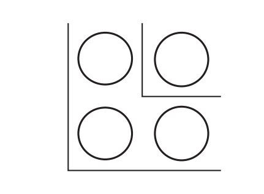
1块石头、3块石头再加5块石头得到一个漂亮的3×3的正方形：与此类似，再加上下一个奇数7，可摆出4×4的正方形：
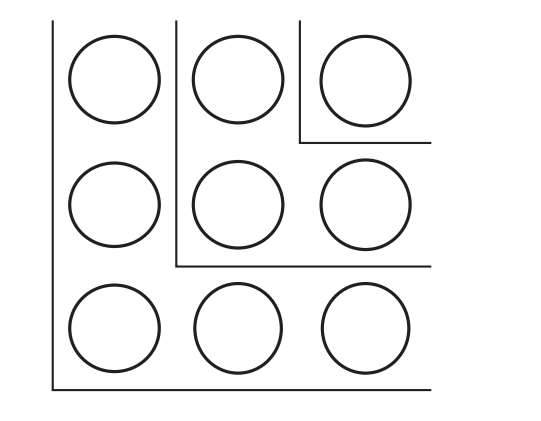
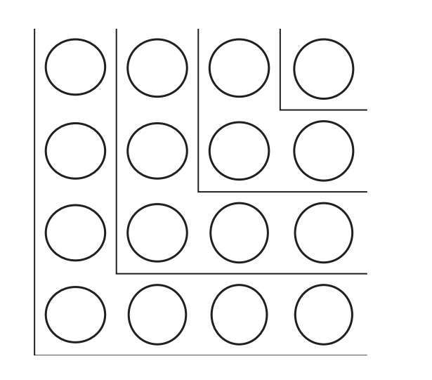
犹太大哲学家巴鲁赫·斯宾诺莎指出了学习知识的3种境界：
1相信
2检验（实验）
3理解
我来解释一下。如果你告诉我一件事，譬如一串奇数的和能得出一个平方数，我可能会相信你确实知道你说的东西。这就是学习知识的第一种境界。但是，也有可能你告诉我的是错的。
如果我花点精力来验证一下，也就是用一些例子来证实确实如此——我就达到了学习知识的第二种境界。这更可信一点，因为我看到它对一些例子起作用了，但是我也不能完全相信。贝诺·阿尔贝尔（1939-2013）教授曾经告诉我一个例子，让我印象深刻：无论怎样不断试验，甚至千遍万遍反反复复，也无法确定某事的对错。请看991n2+1这个式子，是否存在n，使得它是一个完全平方数呢？我们可以尝试许许多多的n，再多也可以，都显示出这个式子永远成不了完全平方数。但是并非如此，因为当n=12055735790331359447442238767时，它确实是一个完全平方数！如果我们能活10亿年，并花全部时间来验证，恐怕也找不到这个数。
只有理解事物为何如此，才能达到学习知识的第三种境界，正如把石头摆成正方形——这样才是零错误。
告知会遗忘，教导能铭记，参与才学到。
——本杰明·富兰克林
我喜欢毕达哥拉斯的方法，因为这是学习知识的第三种境界，即我深层次理解了公式正确的原因。我无法对公式检验无穷个例子，但是我深深懂得到底发生了什么，我会理解为何公式是对的。
我曾经在图书馆偶然读到俄罗斯数学家维克托·乌斯宾斯基（1883-1947）的著作《方程论》。他以詹姆斯·乌斯宾斯基的名字在斯坦福大学做研究。乌斯宾斯基对所有公式以毕达哥拉斯的方式做证明，也就是说用图示。
我先讲一个相当简单的例子。
如果我们把1到n的数字全加起来，结果就是：
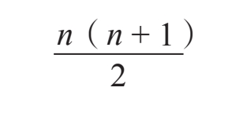
下图解释了公式在n=4时为什么成立。
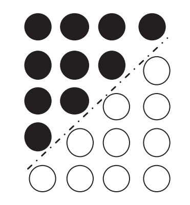
1到4的和等于矩形面积的一半，换言之1/2×4×5=10。
对于n=4是很简单啦，那么对于大的数字呢？
计算从1开始连续数列的和，比如到100，这里有个巧妙的办法，跟某个故事里的办法差不多。那故事的主角是个小男孩，好多国家为了男孩的身份争来争去。俄罗斯人声称那是“几何学中的哥白尼”——尼古拉·罗巴切夫斯基七岁半时候的事。犹太人说是巴鲁赫·斯宾诺莎，也是在那个年龄。德国人抬出了名声赫赫的数学家——确实是名垂青史的数学家——C.F.高斯（高斯钟形分布就是以他的名字命名的），他6岁时就登上了数学舞台的中心。声称自己的孩子能搞定这个的父母也不少。
我们刚才在本书里提到巴鲁赫·斯宾诺莎了，这里就用巴鲁赫的版本吧。
有一天，小小的巴鲁赫枯坐在课堂，百无聊赖。但问题是他不仅百无聊赖还扰乱课堂。老师决定让这孩子搞点花时间的东西，就让巴鲁赫把1到100都加起来。“他得忙到下课了。”老师自言自语。
嗯，想法是一回事，现实是另一回事。老师刚刚转身看黑板，巴鲁赫就说了：“老师，答案是5050。”
我们可以假设巴鲁赫（太幼小了）还不知道上面的公式，所以他是怎么算得那么快的呢？
1+2+3+4+…+98+99+100=？
解答很简单，也很优雅。巴鲁赫不是按顺序加的，他意识到把第一个数加上末一个（1+100=101），第二个加上倒数第二个（2+99=101），第三个加上倒数第三个（3+98=101），如此这般，一直到50+51=101，这50对每对的和都是101。所以他只需要简简单单计算50乘101:50×100=5000，结果加上1乘50，总和是5050。
挺聪明哦，不是吗？我们略加思考几秒，就能理解巴鲁赫的做法类似毕达哥拉斯排列石头。
毕达哥拉斯也用石头的教学方式解释了“平方数”“三角数”“立方数”等术语。这很简单，因为他就是用几何排布的方法来给数字命名的。
例如，我们可以看到1，4，9，16，25，…等“平方数”的部分展示：
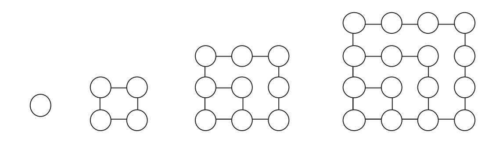
1，3，6，10，15，…是“三角数”，部分展示如下：
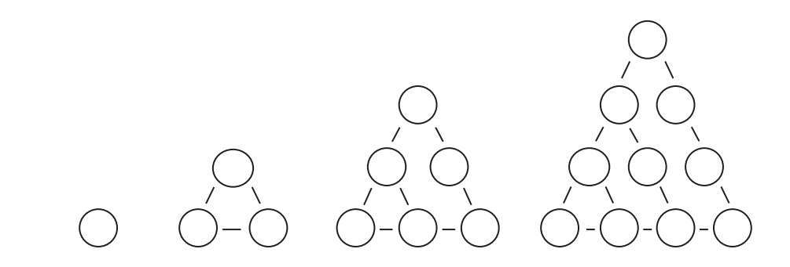
而1，5，12是“五边数”，展示如下：
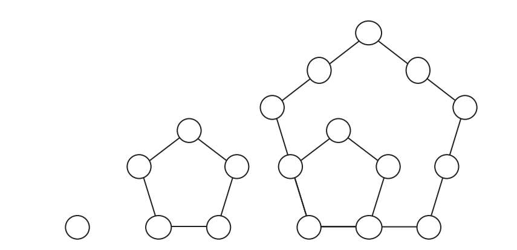
我们回到三角数。
定理：3以上的三角数可以写成一个平方数与两个三角数之和。
证明：如图所示。
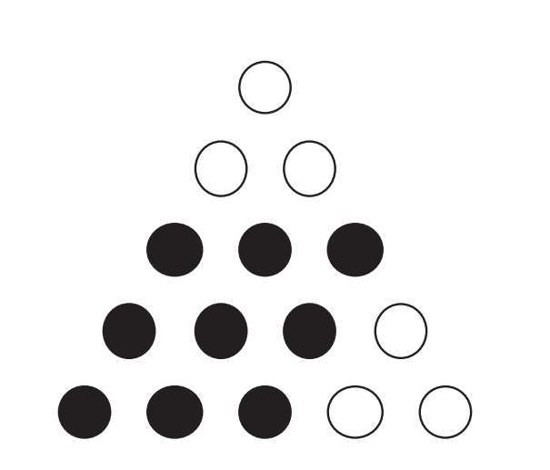
确实，15=9+3+3=32+3+3
证毕。
小提示：这个定理当然可以用常规方法证明，但是有点复杂有点难懂。图示法清晰明了。
那么连续平方数的和呢？
12+22+32+42+52+…=？
在校期间就热爱推导习题的人可能还会记起这个公式：
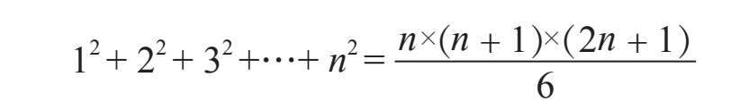
这个公式以13世纪的数学家杨辉而闻名。
它背后的逻辑是什么呢？我们得向毕达哥拉斯求助来理解它。我解释一下n=4时的一些概念，主要概念都遵从同一原则。
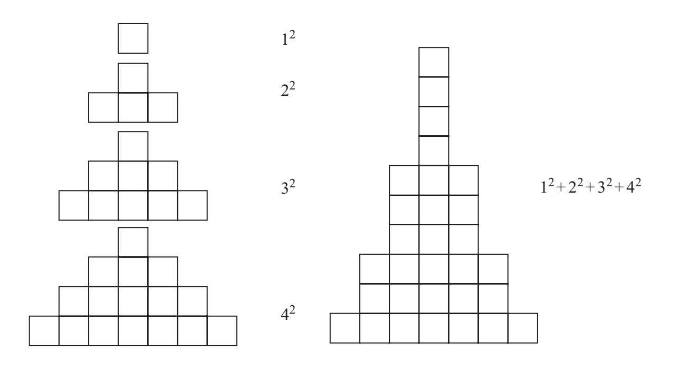
接下来就要画出下图：
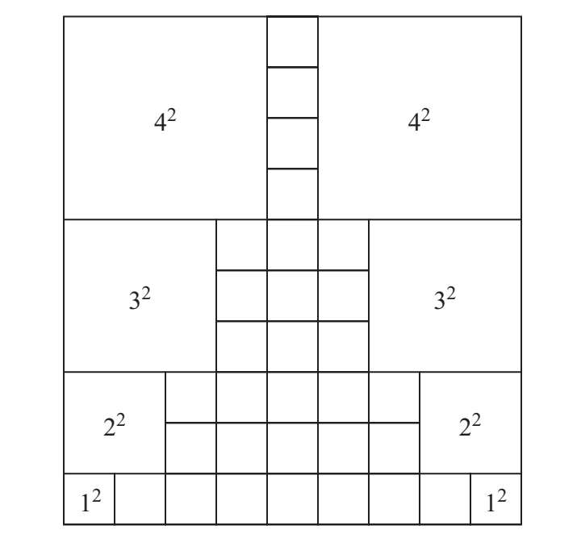
然后我们有：
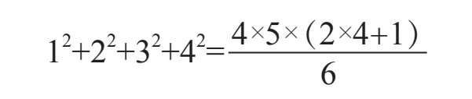
或者说：
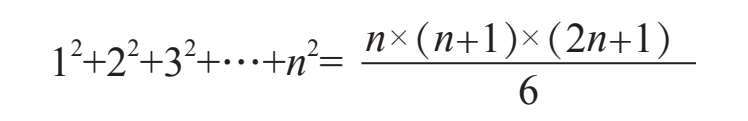
如果你喜欢在“沙滩上摆石头”来做数学的方法，可以来个有趣的消遣：在课本中找到一些类似的公式，收集一堆石头，前往海滩。（别忘了防晒——这些练习都挺花时间的。）另外，还有个娱乐项目是用你自己的石子发明你自己的公式。当然，最终的消遣是——躺在沙滩无所事事！
无数学不能深钻哲学。
无哲学不能深钻数学。
两者皆无，万事皆休。
——莱布尼茨
毕达哥拉斯定理——勾股定理
讲毕达哥拉斯怎能不提以他名字命名的著名定理呢？当然不能不提！因此，我在本章的结尾讲一些关于该定理的轶事。如定理所言（中国称勾股定理，由周朝的商高独立提出），对任意直角三角形，斜边长的平方等于另外两条边长的平方和。
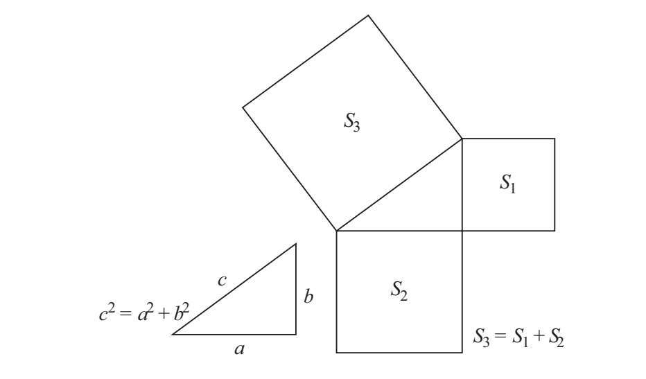
有趣的是，古埃及人早就知道了这个定理，甚至还用3条边的长分别为3、4、5的毕达哥拉斯三角形来构造直角。
当然，上过学的人都能讲出这个著名的定理，但是有多少人真正知道它为何成立和怎样被证明？
有这么个故事：哲学家托马斯·霍布斯（1588-1679）在几何之父欧几里得的书里刚看到勾股定理时，震惊不已，拒绝相信这是真的。那时霍布斯已经40岁了，还没对数学感兴趣。霍布斯读了勾股定理的证明（古人那些动人的图示）后，便深深迷上了几何。
如果霍布斯不相信这个定理的正确性，我也别无他法只好证明一遍了。事实上，有几百种证明方法呢：从欧几里得写下迷倒了霍布斯的那个开始，到最后还有用到微分来证明的。
我给你看3种我特别喜欢的证明方法。但在此之前，我要先展示一个关于等腰直角三角形的。证明很简单，如图所示。
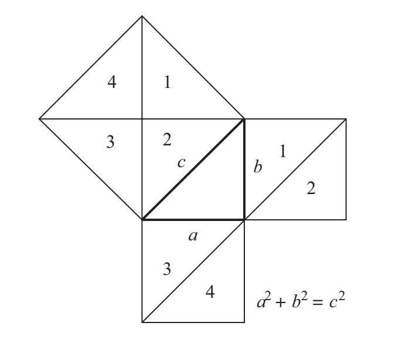
证明1——简中之美
我选这个因为它最简单。
我们选取一个边长为（a+b）的正方形，然后像下方左图所示放进4个直角三角形。现在，让我们用如下方右图所示的方式来排列这4个三角形。在两个正方形里，阴影的面积必然相等，因为都等于正方形的面积减去4个三角形的面积。
因此a2+b2=c2。
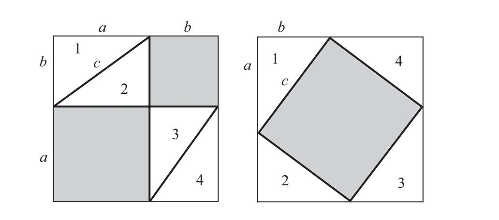
证明2——加菲尔德的证明
如果你认为慵懒的“加菲猫”给了勾股定理一个证明，那就错了。这个证明来自美国第20任总统詹姆斯·A.加菲尔德。（但是假如你认为加菲猫与加菲尔德之间毫无关联，那就又错了！加菲猫之名来自它的创作者吉姆·戴维斯的祖父，与美国前总统的名字相似，祖父的名字是詹姆斯·加菲尔德·戴维斯。（祖父名字的由来也是为纪念加菲尔德总统。）
证明如下，请看这个梯形：
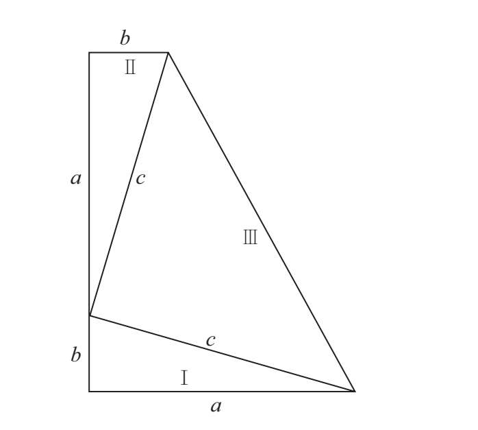
一方面，梯形的面积等于高（a+b）乘以上下底之和的平均值
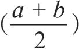
；另一方面，梯形由3个三角形——Ⅰ、Ⅱ和Ⅲ组成。Ⅰ和Ⅱ的面积都是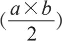
。易证三角形Ⅲ是直角三角形。因为三角形的内角之和是180度，由此三角形Ⅲ的面积为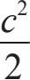
。故梯形的面积可写为：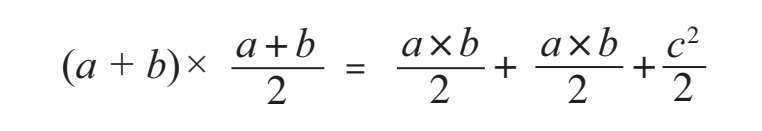
把左边展开再化简，我们最终得到a2+b2=c2。
证毕。
证明3——毕达哥拉斯与达·芬奇的合奏
我们现在讲的这个证明的作者不是别人，正是达·芬奇。乔尔乔·瓦萨里（1511-1574）在他关于大艺术家的著作——《艺苑名人传》里讲到达·芬奇仅仅花了几个月学数学就成了专家。达·芬奇在研究音乐上也没花多少时间，他跟毕达哥拉斯一样喜欢用琉特琴自弹自唱。还有很多学科，达·芬奇没花多少时间就得之于心而用之于手，比那些孜孜钻研的人还精通。
看了以下图示，达·芬奇的证明一下就能懂了。这一点也不意外。
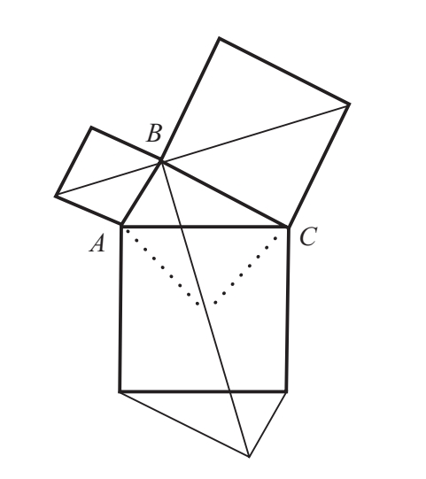
达·芬奇绘制的这个图是怎么来的？证明藏在哪里？给你点时间，动动脑筋思考一下吧。
[1]数学家哈那德·玻尔是丹麦物理学家尼尔斯·玻尔的弟弟。他还是丹麦国家足球队队员，在1908年奥运会上摘得银牌。该句出自《数学作品集》中的《回顾》。
[2]藤原正彦是日本闻名的大众数学图书作家。他有一本书讲定理之美的，在其中他把定理分成美丑两类。
[3]第一个数是81。第二个是……咚咚咚，1458！你猜对了吗？
[4]答案是62。每个数是它前一个数与前一个数的数码之和。例如16之后是23，因为16+（1+6）=16+7=23。所以谜题的答案是49+13=62。